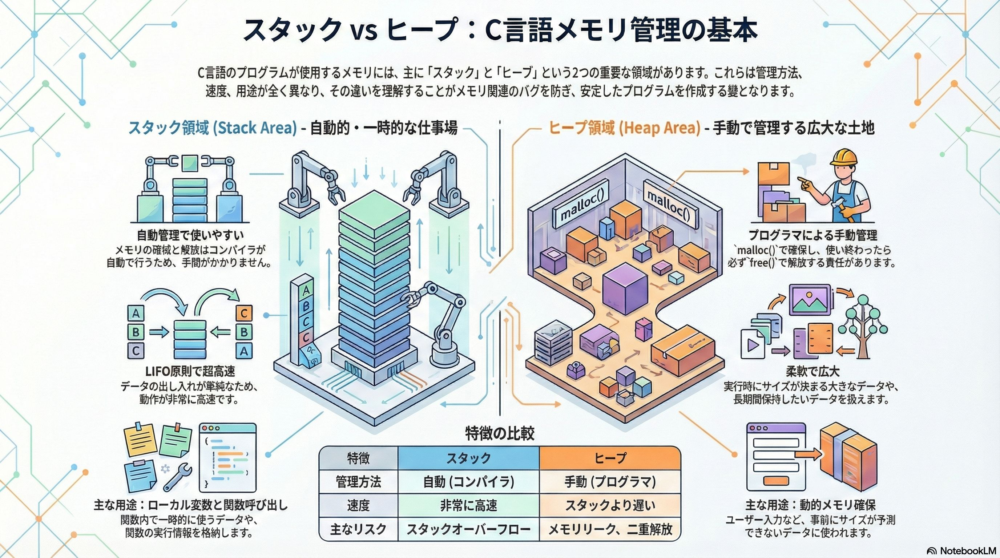

スタックとヒープ

イントロダクション：なぜメモリ管理が重要なのか？
これから皆さんが安定性と効率性に優れたアプリケーションを開発していく上で、避けては通れない非常に重要な概念が「メモリ管理」です。次章で説明するように、C言語におけるプログラムが利用するメモリ領域は4種類ありますが、その中で、特に スタック と ヒープ の動作原理を深く理解することは、信頼性の高いコードを書くための絶対的な基礎となります。この二つの領域は、それぞれ異なる役割とルールを持っており、その違いを把握することは「ポインタ使い」としてのレベルを上げ、メモリ関連の厄介なバグを未然に防ぐ鍵となるのです。
この章を通じて、皆さんは以下の主要なトピックを学びます。
- スタックとヒープの基本的な役割と目的
- 両者の決定的な違い（管理方法、寿命、速度など）
- 関数呼び出しがスタックに与える影響
- スタックとヒープが連携して動的メモリを確保する仕組み
- メモリリークなどの重大なリスクとその防止策
メモリの動作原理を理解することは、単なる知識の習得ではありません。それは高品質なコードを自信を持って書き上げるための第一歩です。さあ、プログラムの舞台裏で何が起きているのか、その核心に迫っていきましょう。
1. メモリの二大領域：スタックとヒープの概要
C言語のプログラムが実行される際、OS（オペレーティングシステム）はプログラムが作業するためのメモリ空間を割り当てます。このメモリ空間はいくつかの領域に分かれていますが、その中でも特に重要なのが「スタック領域」と「ヒープ領域」です。これら二つの領域は、それぞれ全く異なる目的とルールに基づいてデータを管理します。この違いを正確に理解することが、本章のゴールです。
1.1. スタック領域 (Stack Area) - 自動的・一時的な仕事場
スタック領域とは、プログラムの実行中に、コンパイラによって自動的かつ一時的に管理されるメモリ領域です。プログラマが直接操作することはほとんどなく、プログラムの構造に従って機械的に利用されます。
- 自動管理 メモリの確保と解放は、すべてコンパイラが自動で行います。そのため、プログラマが「このメモリを確保してください」「このメモリを解放してください」といった指示を明示的に出す必要はありません。この自動化された管理が、スタックの大きな利便性です。
- 主な用途 主に「ローカル変数」と「関数の呼び出し情報」という二つの重要なデータが格納されます。関数内で宣言されたint x;のような変数は、その関数が実行されている間だけスタック上に存在します。
- データの流れ (LIFO) スタックは「LIFO (Last-In, First-Out)」、つまり「後から入れたものが先に出る」という原則で動作します。これは、洗ったお皿を積み重ねていく様子に似ています。関数が呼び出されるたびに、その関数の情報（スタックフレーム）が一番上に積まれ（プッシュ）、関数の処理が終わると、一番上のお皿を取り除くように自動的に解放（ポップ）されます。この比喩が重要なのは、一番上のお皿にしかアクセスできないという点です。これが、後述する「スコープ」の概念、つまりなぜfuncAがfuncBのローカル変数に触れないのか、というルールの物理的なイメージとなります。
- サイズ制限とリスク スタック領域のサイズには上限が定められています。もし関数が無限に再帰的に呼び出されるなどして、データが積まれすぎると、スタックの許容量を超えてしまいます。この状態が「スタックオーバーフロー」と呼ばれる致命的なエラーであり、プログラムは強制終了します。
1.2. ヒープ領域 (Heap Area) - 手動で管理する広大な土地
ヒープ領域とは、プログラマが任意のタイミングで、手動でメモリを確保・解放するために使用される、広大で柔軟なメモリ領域です。つまり以前の章で説明した「動的メモリ確保」の対象です。
- 手動管理（動的メモリ確保） ヒープ領域の利用は、完全にプログラマの責任において行われます。malloc()関数でメモリの確保を要求し、使い終わったら必ずfree()関数で解放しなければなりません。この手動管理が、ヒープの最大の特徴であり、同時に難しさでもあります。
- 主な用途 「実行時にサイズが決まる大きなデータ」（例えば、ユーザーの入力に応じてサイズが変わる配列）や、「関数をまたいで長期間保持したいデータ」など、スタックの自動的・一時的な性質では対応できないケースで利用されます。
- データ構造 スタックのような厳格なLIFOの規則はありません。OSはヒープ内の空いている場所を見つけてメモリを割り当てるため、確保されたメモリブロックが物理的に連続しているとは限りません。
- 危険性（メモリリーク） ヒープ管理における最大の敵が「メモリリーク」です。これは、malloc()で確保したメモリをfree()で解放し忘れることで発生します。解放されなかったメモリは、プログラムが終了するまで誰にも使われないまま占有され続け、最終的には利用可能なメモリをすべて使い果たし、プログラムの動作を不安定にしたり、クラッシュさせたりする原因となります。
スタックの自動性と安全性、そしてヒープの柔軟性と広大さは、いわばトレードオフの関係にあります。どちらの領域をどのような状況で使うべきかを的確に判断する能力は、Cプログラマにとって不可欠です。次のセクションでは、両者の違いをより明確にするため、比較表を用いて分析します。
2. スタックとヒープの比較分析
スタックとヒープの特性を直接比較することは、両者の長所と短所を浮き彫りにし、特定の状況でどちらのメモリ領域を利用すべきかという設計判断を的確に行う上で非常に重要です。以下の表で、その違いを整理してみましょう。
| 特徴 | スタック領域 (Stack) | ヒープ領域 (Heap) |
|---|---|---|
| 管理方法 | 自動 （コンパイラが行う） | 手動 （malloc / free を使う） |
| データの寿命 | 関数が終了するまで | free()されるか、プログラムが終了するまで |
| 主な用途 | ローカル変数、関数の呼び出し | 実行時にサイズが決まる大きなデータ |
| 速度 | 非常に高速 | スタックよりは遅い |
| リスク | スタックオーバーフロー | メモリリーク、二重解放 |
この比較表から、いくつかの実践的な洞察が得られます。
- なぜスタックは高速なのか？ スタックへのメモリ確保・解放は、CPUの特定レジスタ（スタックポインタ）が持つアドレス値を加減算するだけの、極めて高速な単一命令です。OSの複雑なメモリ管理アルゴリズムを呼び出す必要がないため、ヒープに比べて桁違いに高速なのです。
- 手動管理がもたらすプログラマの責任 ヒープの「手動管理」は、大きな自由度をもたらす一方で、「借りたものは必ず返す」という厳格な責任をプログラマに課します。free()の呼び出し忘れ（メモリリーク）や、同じメモリを二度解放する（二重解放）といったミスは、すべてプログラマの責任となり、深刻なバグに直結します。
- データの寿命とスコープ データの「寿命」は、プログラムの設計において極めて重要です。関数内で一時的に使うだけのデータはスタックに、関数が終わった後も使い続けたいデータはヒープに置く、という使い分けが基本となります。
これらの違いが、実際のプログラムの動作、特にプログラムの基本単位である「関数の呼び出し」において、どのように具体的に現れるのでしょうか。次の章では、スタックの動作原理をさらに詳しく見ていきます。
3. スタックの動作原理：関数の呼び出しと「スタックフレーム」
スタックは、プログラムの実行フローを裏で支える「縁の下の力持ち」です。関数が呼び出され、処理を終えて戻ってくる。この一連の当たり前の動作は、すべてスタックのLIFO（後入れ先出し）の仕組みによって実現されています。関数が呼び出されるたびにスタック上で何が起きているのかを具体的に理解することは、変数のスコープや再帰といった重要な概念の理解に直結します。
スタックフレームとは？
関数が呼び出されると、その関数の実行に必要な情報一式がまとめられ、スタックに積まれます。この情報のかたまりを「スタックフレーム」と呼びます。スタックフレームとは、関数が使う、引数、ローカル変数、戻りアドレスなどをひとまとめにした領域のことです。
- 引数: 関数に渡された値。
- ローカル変数: 関数内で宣言された変数。
- 戻りアドレス: 関数の処理が終わった後、どこに戻ればよいかを示す情報。
関数呼び出しのシーケンス
main関数からfuncAが呼び出され、さらにfuncAからfuncBが呼び出されるというシナリオで、スタックの状態がどのように変化するかを見ていきましょう。
ステップ1: main関数の開始
プログラムが実行されると、まずmain関数のためのスタックフレームがスタックの底に積まれます。
| 制御 | スタックの内容 |
|---|---|
| → | main関数のスタックフレーム |
ステップ2: 関数funcAの呼び出し
main関数がfuncAを呼び出すと、mainのスタックフレームの上に、funcAのための新しいスタックフレームが積まれます（プッシュ）。
| 制御 | スタックの内容 |
|---|---|
| → | funcA のスタックフレーム |
| main関数のスタックフレーム |
ステップ3: 関数funcBの呼び出し
次に、funcAがfuncBを呼び出すと、さらにその上にfuncBのスタックフレームが積まれます。この時点で、プログラムが直接アクセスできるのは一番上にあるfuncBのスタックフレーム内のローカル変数だけです。
| 制御 | スタックの内容 |
|---|---|
| → | funcB のスタックフレーム |
| funcA のスタックフレーム | |
| main関数のスタックフレーム |
ステップ4: 関数funcBの終了と解放
funcBの処理が完了すると、funcBのスタックフレームはスタックから自動的に取り除かれ（ポップ）、制御が呼び出し元のfuncAに戻ります。この瞬間、funcB内で使われていたローカル変数は完全に消滅し、アクセス不能になります。
| 制御 | スタックの内容 |
|---|---|
| → | funcA のスタックフレーム |
| main関数のスタックフレーム |
この一連のプロセスから導き出される重要な結論は、「なぜ関数内のローカル変数が、その関数の外から使えないのか」というスコープの概念です。答えは、変数が属するスタックフレームが、関数の終了と共に物理的にメモリから消去されてしまうからです。
ステップ5: 関数funcAの終了と解放
funcAの処理が完了すると、funcBのときと同様に、funcAのスタックフレームはスタックから自動的に取り除かれ(ローカル変数は完全に消滅し)、制御が呼び出し元のmainに戻ります。
| 制御 | スタックの内容 |
|---|---|
| → | main関数のスタックフレーム |
しかし、プログラムは一時的なデータだけで完結しません。関数の寿命を超えてデータを保持したい場合、スタックだけでは力不足です。そこで登場するのがヒープ領域であり、次の章では、スタックとヒープがどのように連携して動的なデータ管理を実現するのかを解説します。
4. スタックとヒープの連携：動的メモリ確保の舞台裏
ヒープ領域の利用は、単独で行われるわけではありません。実際には、スタック領域との巧妙な連携プレーによって成り立っています。mallocを使ってヒープメモリを確保する際、データがどのメモリ領域にどのように配置され、プログラムはそれにどうアクセスするのか。その一連の流れを解き明かすことが、動的メモリ確保を真に理解する鍵となります。
ここでは、以下のコードを例に、そのプロセスをステップバイステップで見ていきましょう。
int *p;
p = (int *)malloc(sizeof(int));
ステップ1: ポインタ変数の生成
まず、int *p; という行が実行されます。この時点で何が起こるかというと、ポインタ変数p自体がスタック領域に作成されます。
- スタック領域: pという名前のポインタ変数が確保される。
- ヒープ領域: 何も変化しない。
重要なのは、このpはmain関数（あるいはそれが宣言された関数）のローカル変数であるため、その置き場所はスタックであるという点です。この時点では、pの中身は不定（いわゆるゴミの値）であり、どこも指していません。このような初期化されていないポインタを誤って使用すると、プログラムは即座にクラッシュする可能性があります。
| 領域 | 変数名 | 型 | 中身（値） |
|---|---|---|---|
| スタック | p | int * (ポインタ) | （ゴミの値 / NULL） |
ステップ2: mallocによるヒープ確保
次に、p = (int *)malloc(sizeof(int));の右辺、malloc関数が実行されます。mallocはOSに対して「int型一つ分のメモリをください」と要求します。
- スタック領域: 何も変化しない。
- ヒープ領域: OSがヒープ内の空き領域からint型（通常4バイト）のメモリブロックを確保し、その先頭アドレスを返す。
例えば、OSが0x8004というアドレスのメモリを確保したとします。mallocはこの0x8004という値を返り値として返します。
ステップ3: アドレスの代入と連携の完成
最後に、代入演算子=によって、mallocが返したヒープのアドレスが、スタック上のポインタ変数pに格納されます。
- スタック領域: ポインタ変数pの値が、ヒープのアドレス（例: 0x8004）になる。
- ヒープ領域: 確保されたメモリはそのまま。
これで、「スタック上のポインタが、ヒープ上のメモリを指し示す」という連携関係が完成しました。ポインタpは、スタックとヒープをつなぐ「橋渡し役」として機能しているのです。
| 領域 | 変数名 | 型 | 中身（値） |
|---|---|---|---|
| スタック | p | int * (ポインタ) | 0x8004 (ヒープのアドレス) |
| ヒープ | （変数名なし） | int | （ゴミの値） |
この連携が確立されて初めて、*p = 100; というコードが意味を持ちます。このコードは、「ポインタpが指し示す先（つまりヒープ上のアドレス0x8004）に、値100を書き込む」という操作を実行します。
このようにメモリを「借りる」プロセスを理解した今、次はそのメモリを「返す」ことの重要性、すなわちfree()関数の役割について学ぶ必要があります。
5. プログラマの責務：free()によるメモリ解放とリークの防止
ヒープ領域のメモリ管理におけるプログラマの最も重要な責務は、「借りたメモリを確実に返す」ことです。この責務を果たすための重要なツールがfree()関数です。これを正しく使うことがプロフェッショナルなコードの証であり、怠った場合の深刻な結果が「メモリリーク」です。本章では、このプログラマの責務について深く掘り下げます。
free()関数の仕組み
free()関数は、mallocで確保したメモリブロックの先頭アドレスを引数に取ります。この関数を呼び出すと、OSに対して「このアドレスから始まるメモリブロックはもう使いません」と通知します。OSはその領域を「未使用」としてマークし、将来別のmalloc呼び出しで再利用できるようになります。
ここで注意すべき点は、free(p)を実行しても、スタック上にあるポインタ変数p自体は消えないということです。pは解放されたメモリのアドレスを持ち続けます。この、もはや無効となったメモリ領域を指し続けるポインタは「ダングリングポインタ（dangling pointer）」と呼ばれます。この「ダングリングポインタ」を誤って使用すると、プログラムがクラッシュするだけでなく、解放されたメモリが別の機密データ（例えばパスワードや個人情報）に再割り当てされていた場合、意図せずその情報を読み取ったり書き換えたりする深刻なセキュリティ脆弱性の原因となります。
メモリリークの危険性
free()を呼び出す最大の理由は、**メモリリーク（Memory Leak）**を防ぐためです。メモリリークは以下のメカニズムで発生します。
- メモリ確保: mallocでヒープにメモリを借りる。
- ポインタの消失: 借りたメモリを指していたポインタ変数（スタック上に存在）が、関数の終了などでスコープを外れ、自動的に消滅する。
- アクセス不能: ヒープ上に借りたメモリは残ったままですが、その場所を知る唯一の手がかりだったポインタが失われたため、誰もそのメモリにアクセスも解放もできなくなります。
この「迷子」になったメモリは、プログラムが終了するまで無駄に占有され続けます。これが頻繁に発生すると、以下のような深刻な問題を引き起こします。
- メモリの枯渇: 利用可能なヒープメモリが徐々に減少し、最終的には新たなmallocが失敗するようになり、プログラムがクラッシュします。
- システム全体への悪影響: 特に長期間稼働するサーバーアプリケーションの開発者にとって、見過ごされた小さなメモリリークは些細なバグではありません。それはサービス停止や緊急再起動を要する致命的な障害となり得ます。だからこそ、free()のマスターは交渉の余地がない必須スキルなのです。
free()の使用上の注意点
free()は必須のツールですが、使い方を誤ると別の問題を引き起こします。
| 問題点 | 説明 | 対策 |
|---|---|---|
| 二重解放 (Double Free) | 同じアドレスに対してfree()を二度以上呼び出すことです。これはメモリ管理情報を破壊し、プログラムのクラッシュや予測不能な動作の原因となります。 | プロのCプログラマとしての規律です。解放後のポインタへのNULL代入は、チームのコーディング規約として徹底すべき防御的なプログラミングの基本です。 |
| 解放後の使用 (Use After Free) | free()で解放済みのメモリに、再びアクセスしてデータを読み書きすることです。そのメモリは既にOSによって別の目的に再割り当てされている可能性があり、データの破壊やセキュリティ上の深刻な脆弱性を生み出します。 | 上記同様、解放後にポインタへNULLを代入することが最も確実な防御策です。これもプログラマの規律として徹底すべきです。 |
結論として、ヒープメモリ管理は「借りたら返す」というプログラマの規律の上に成り立っています。free()を正しく、適切なタイミングで使うことは、プロフェッショナルなCプログラマにとって必須のスキルなのです。
6. まとめ：メモリ管理をマスターし、次のステップへ
このトレーニング資料を通じて、C言語プログラミングの心臓部とも言えるメモリ管理、特にスタックとヒープの役割と動作原理について学びました。ここで得た知識は、今後の開発において皆さんを力強く支える土台となるでしょう。
最後に、最も重要な概念を振り返ります。
- スタックは、ローカル変数と関数の呼び出しに使われる、コンパイラが自動管理する高速な領域です。
- ヒープは、動的な大きなデータや長寿命のデータに使われる、プログラマが手動管理する広大な領域です。
- ヒープの利用には、malloc()で借り、使い終わったら必ずfree()で返すというプログラマの厳格な責任が伴います。
- free()を怠るとメモリリークを、誤って使うと二重解放などの深刻なバグを引き起こし、プログラムの安定性を著しく損ないます。
初心者の皆さんへ。スタックとヒープの概念を理解することは、単なる暗記項目ではありません。それは、メモリの動きを頭の中でシミュレーションしながら、なぜこのコードが安全で、なぜあのコードが危険なのかを論理的に判断するための、実践的なスキルです。
これからも、常にメモリを意識したコーディングを心がけてください。それが、信頼性の高いソフトウェアを構築するプロフェッショナルへの確実な道筋です。